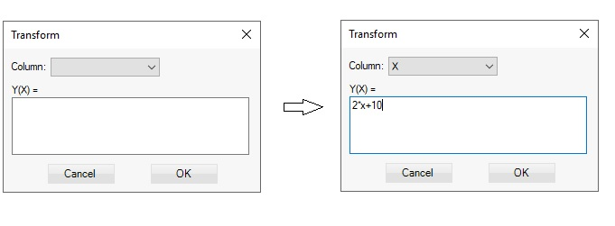

Transform data
The data in the first two columns can be transformed. Sometimes rescaling the input data can improve the regression accuracy.
Choose Data > Transform from the menu or keys Ctrl+Q. Select the column and enter the formula of the transformation.
No matter which column is chosen the transformation is entered as Y(X):

In the example above not Y column will be changed but X, the transformation will be x=2*x+10. To revert the transformation choose Data > Undo
from the menu or press Ctrl+Z keys.